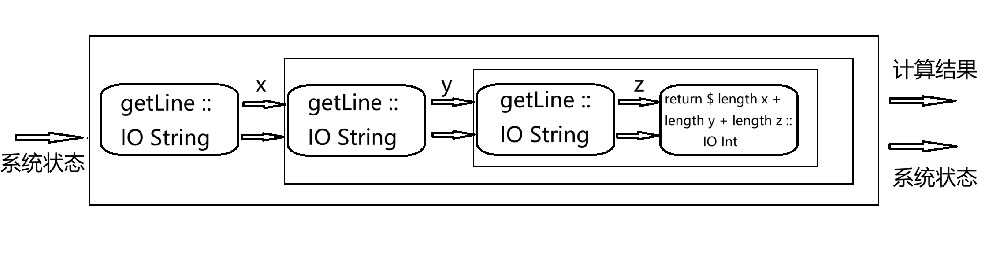

IO 专题
在Monad专题中，我们已经介绍了一些有关IO作为monad的性质和用法，本章我们将着重讲解使用IO monad进行系统编程。
纯度与副作用
纯代码(purity) 和无 副作用(side effect) 是Haskell最基本的特性。对于一个纯函数，其结果完全由参数决定，一旦参数确定了，那么结果是唯一确定的，且不受时间或外界环境的影响。纯函数是无副作用的，与之相对的，不纯函数往往会伴随除了计算之外的行为，如程序的输入和输出等。Haskell作为程序语言，需要与现实世界产生作用，这将不可避免地带来副作用。
IO monad
Haskell将IO操作装入monad中，得到IO monad。一方面，我们可以在IO monad中执行副作用，而不会将影响传到其他纯代码中；另一方面，我们仍然可以在IO操作中进行计算，并传递计算结果。
对于一个类型为IO a的值，它表示该值进行若干的IO操作，并最终得到一个类型为a的计算结果，这个计算结果存储在monad内部，可以通过特定的方式进行传递。
回顾单子类型类的定义：
class Applicative m => Monad m where
(>>=) :: m a -> (a -> m b) -> m b
(>>) :: m a -> m b -> m b
return :: a -> m a
fail :: String -> m a
{-# MINIMAL (>>=) #-}
Monad类型类的最小实现为(>>=)，它接受一个容器m a，以及一个类型为a -> m b的函数,并将第二个函数依次应用于第一个容器中的元素，最后生成新的容器。return函数将一个数值a映射为包含该元素的容器，对应了Applicative中的pure函数；(>>)类似(>>=)，区别是(>>)并没有将第一个参数传入第二个参数中；最后fail用于计算错误时进行报错。
使用>>=可以将IO操作串联起来，例如计算三个输入的字符串的长度和：
-- code'3.hs
threeStrLn :: IO Int
threeStrLn =
getLine >>=
(\x -> getLine >>=
(\y -> getLine >>= (
\z -> return $ length x + length y + length z)
))
三个getLine分别从键盘读取一行字符串，并分别传递给x，y和z,最后计算三个字符串的长度并封装到IO monad中。
当然上述代码也可以使用do 语句改写：
-- code'3.hs
threeStrLn' :: IO Int
threeStrLn' = do
x <- getLine
y <- getLine
z <- getLine
return $ length x + length y + length z
两者是完全等效的。

可变数据 Data.IORef
在纯代码中，“变量”是不可变的，即一旦我们为变量分配了值后，就不能修改这个值。Haskell 提供了一个在IO monad中修改变量内存的模块Data.IORef，该模块提供了IORef容器以及相关的功能函数，使我们能够直接修改容器中的变量。
| 函数名称 | 类型签名 | 功能 |
|---|---|---|
| newIORef | a -> IO (IORef a) | 新建IORef |
| readIORef | IORef a -> IO a | 读取IORef中的值 |
| writeIORef | IORef a -> a -> IO () | 向IORef写入值 |
| modifyIORef | IORef a -> (a -> a) -> IO () | 修改IORef中的值 |
| modifyIORef' | IORef a -> (a -> a) -> IO () | 严格（非惰性）修改IORef中的值 |
| atomicModifyIORef | IORef a -> (a -> (a, b)) -> IO b | 原子地修改IORef中的值 |
| atuomicModifyIORef' | IORef a -> (a -> (a,b)) -> IO b | 原子地严格（非惰性）修改IORef中的值 |
| atomicWriteIORef | IORef a -> a -> IO () | 原子地向IORef写入值 |
| mkWeakIORef | IORef a -> IO () -> IO (Weak (IORef a)) | 创建弱指针对象 |
上述函数中，前四个比较基础，下面给出使用示例：
-- code'3.hs
iorefDemo :: IO ()
iorefDemo = do
x <- getLine
aref <- newIORef x
val <- readIORef aref
print val
y <- getLine
writeIORef aref y
val <- readIORef aref
print val
modifyIORef aref ("modified :" ++ )
val <- readIORef aref
print val
该示例首先读取一行字符串x，使用newIORef创建一个IORef容器aref，并将x赋值，赋值后使用readIORef将值读入val并输出；接着读取新的一行字符串y，并通过writeIORef将其写入aref中，写入后将值读入val并输出；最后，用modifyIORef对aref内的值进行修改，在其字符串前添加"modified :"，重新读取值到val并输出。
Prelude> :load code'3.hs
[1 of 1] Compiling Main ( code'3.hs, interpreted )
Ok, one module loaded.
Prelude> iorefDemo
hello
"hello"
hello haskell
"hello haskell"
"modified :hello haskell"
除了基础的四个函数操作，atomicModifyIORef以原子方式进行修改，该函数对于在多线程中使用IORef非常有用,当只有一个IORef时，atomicModifyIORef函数，可以阻止多个线程因访问其而可能产生的竞争状态；atomicWriteIORef以原子方式进行写入；最后mkWeakIORef创建一个指向IORef的弱指针。
补充：大多数现代的CPU架构都有一个内存模型，这个模型会允许线程对读取操作和写入进行重排，以使读取早于写入，例如x86/64架构，而原子方式则会强制一个内存屏障以阻止原子块中的读写操作的重排
提示： 有关严格求值版本的细节可参阅Data.IORef，有关弱指针的细节可参阅System.Mem.Weak
[1] IO inside. (2024, April 22). HaskellWiki, . Retrieved 08:59, May 2, 2024 from https://wiki.haskell.org/index.php?title=IO_inside&oldid=66607.